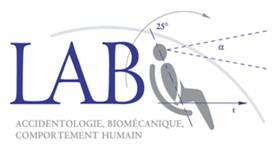

- homepage
- competences
- research
- publications
- education
- neuroscience
- psychology
- pedagogy
- citations
- glossary
- links
- contact
Curriculum Vitae
|
|
|
|
Professional experience
- .....
- Teacher (2004) within the framework on the "Directed work of experimental psychology" for first-year students, Psychology Department, Angers University.
Training course (2004) under the direction of Christophe Quaireau (Lecturer) at the "Laboratoire de Psychologie Expérimentale" (LPA: EA 1285) from the "Centre de Recherches en Psychologie, Cognition et Communication", Psychology Department, Rennes University.
Training course (2003) under the direction of Christophe Boujon (Lecturer) at the "Laboratoire de Psychologie: Processus de Pensée" (EA 2646), Psychology Department, Angers University ; for the"Research Center of Applied Sociology and Psychology Insititute" (UCO).
Training course (2002) under the direction of Jean-Michel Hoc (CNRS Research Director) in the research group "Psychologie, Cognition, Technologie" at the "Institut de Recherche en Communications et en Cybernétique de Nantes" (IRCCyN: UMR-CNRS 6597), Nantes University.
Education
Admission at the "Concours externe de Professeur des écoles de l'enseignement public" (2013) in the "Versailles Academy", "Ministery of National Education", France.
Thesis in Cognitive Psychology (2005-2008) under the direction of Jean-Marie Cellier (EPHE Reserach Director), Céline Lemercier (Lecturer), at the "Laboratoire Travail et Cognition" (CLLE-LTC) from "Cognition, Langues, Langage, Ergonomie" (CLLE: UMR-CNRS 5263), Psychology Department, Toulouse University ; and under the direction of Michèle Moessinger (Research Responsible), at the "Human Behavior Biomechanics and Accidentology Laboratory" (LAB: Commun Laboratory PSA-Peugeot-Citroën-Renault), Nanterre.
Research Master in Cognitive Psychology (2003-2004) under the direction of Christophe Boujon (Lecturer), at the "Laboratoire de Psychologie: Processus de Pensée" (EA 2646), Psychology Department, Angers University ; and in partenership with the "Laboratoire Langage, Mémoire et Développement Cognitif" (LMDC: UMR-CNRS 6215) and the "Laboratoire Performance, Motricité et Cognition" (LPMC: EA 3814), Psychology Department, Poitiers University.
|
Cognition, Langues, Langage, Ergonomie (CLLE: UMR-CNRS 5263),
Laboratoire Travail et Cognition (CLLE-LTC), Maison de la recherche, Université de Toulouse-Le-Mirail, 5 Allée Antonio Machado, 31058 Toulouse, Cedex 9, France. +33 5 61 50 35 37
|
|
|

|
Laboratoire d'Accidentologie, de Biomécanique et
d'étude du comportement humain (LAB: Laboratoire commun PSA-Peugeot-Citroën-Renault), 132 Rue des Suisses, 92000 Nanterre, France. |